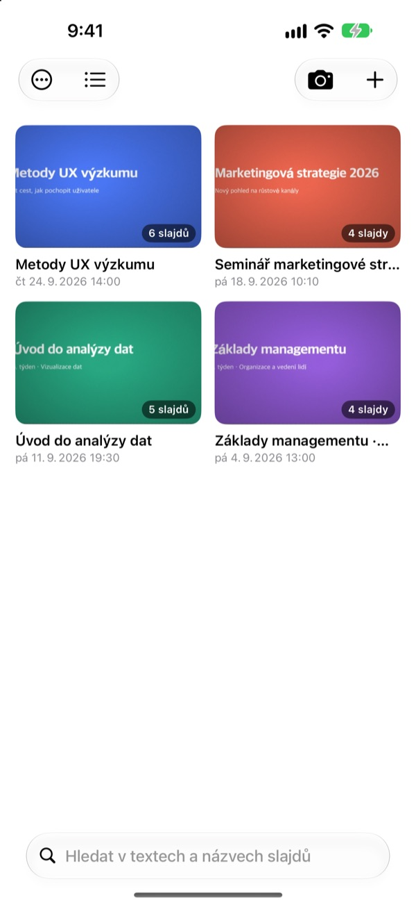
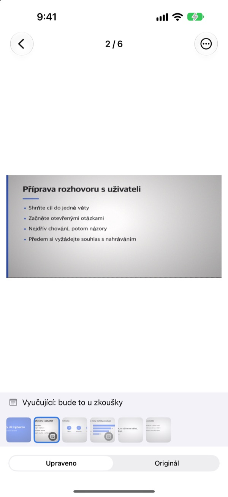
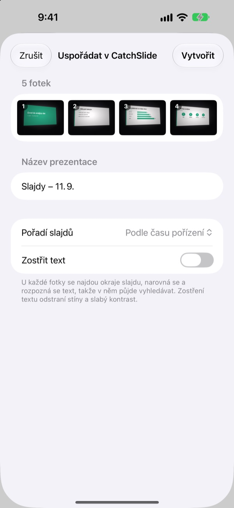
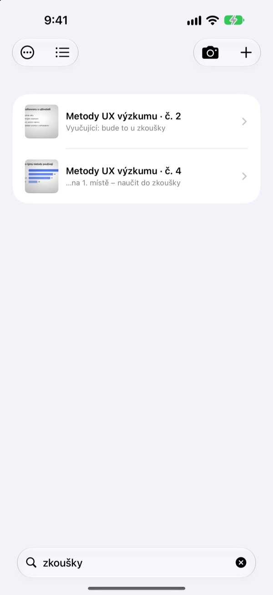

Vyfoceno z boku.
Uloženo zepředu.
Fotoaparát najde všechny čtyři rohy snímku, narovná ho a ořízne okolí. Snímky vyfocené za sebou skončí ve stejné prezentaci.
Jeden nákup, všechny funkce. Žádné předplatné, žádný účet.

Narovnejte si ho sami
Tahle fotka vznikla šikmo z místa na kraji posluchárny. Zelený obrys ukazuje nalezené rohy snímku.
Otevřeli jste před zkouškou fotky a snímek ne a ne najít?
Snímky ze zadních řad jsou vždycky nakřivo a ztrácejí se mezi selfie a účtenkami. V tiché posluchárně vás od focení odradí už samotný zvuk závěrky. CatchSlide fotí potichu, každý snímek narovná a drží je pohromadě podle prezentací.
Rovně hned při focení
Fotoaparát živě sleduje čtyři rohy snímku a jakmile je zachytí, zezelená. I šikmo pořízený snímek vypadá jako focený zepředu, bez pozadí.
Žádný zvuk závěrky. Zapněte Automatické focení a každý nový snímek se vyfotí sám, rozmazané záběry se přeskočí.

Starší fotky najednou
V aplikaci Fotky vyberte několik fotek z přednášky a sdílejte je do CatchSlide. Narovnají se a uloží jako jedna prezentace v pořadí, v jakém jste je fotili.Zostřit text odstraní stíny a vybledlý kontrast.

Stačí jedno slovo
CatchSlide přečte text každého snímku přímo v zařízení. I po několika týdnech vás jediné slovo dovede ke správnému snímku.
Poznámky ke snímkům se dají prohledávat také. Označte pár z nich slovem zkouška a celé učivo najdete jedním hledáním.

Začněte ve třech krocích
- 1
Otevřete fotoaparát
Tlačítkem v seznamu, widgetem na ploše nebo ze zamčené obrazovky.
- 2
Zaměřte snímek
Až rohy zezelenají, vyfoťte, nebo to nechte na automatickém focení.
- 3
Vracejte se k prezentacím
Hledejte, přidávejte poznámky a exportujte PDF na opakování.
Co všechno jde s prezentací udělat
- Nahrávání
- Nahrávejte zvuk při focení a pak si každý snímek pusťte od chvíle, kdy jste ho vyfotili
- Přepis
- Převede nahrávku na text, ukáže, co zaznělo u každého snímku, a zapojí ho do hledání
- Shrnutí pomocí AI
- Shrne prezentaci z textu snímků a přepisu (iOS 26 nebo novější na zařízeních s podporou Apple Intelligence)
- Podklady na opakování s jedním, dvěma nebo čtyřmi snímky na stránku
- Markdown
- Soubor .zip připravený pro Notion nebo Obsidian
- PowerPoint
- Export do .pptx s přepisem v poznámkách řečníka
- Sloučení
- Vyberte několik prezentací a spojte je do jedné
- Synchronizace s iCloudem
- Po zapnutí uvidíte prezentace i na dalších zařízeních se stejným Apple ID. Ve výchozím stavu vypnutá
- Widgety
- Otevřou fotoaparát přímo z plochy nebo zamčené obrazovky
Rozpoznávání textu, přepis i shrnutí pomocí AI běží přímo v zařízení.
Koupíte jednou, máte všechno
CatchSlide
- Tiché focení, automatické focení a narovnání
- Import více fotek najednou z aplikace Fotky
- Snímky podle prezentací, hledání v textu i poznámkách
- Nahrávání, přepis a shrnutí pomocí AI
- Export do PDF, Markdownu a PowerPointu
- Synchronizace s iCloudem a widgety
Spropitné (dobrovolné)
- Pokud vám aplikace pomáhá, můžete vývojáři poslat malé spropitné
- Spropitné nic neodemyká. Všechny funkce fungují i bez něj
Najdete ho na obrazovce Moje údaje.
Žádné předplatné ani placené odemykání funkcí. Cenu pro vaši zemi najdete v App Storu.
Časté dotazy
Jak vyfotím snímek?
Otevřete fotoaparát a zaměřte snímek. Jakmile rohy zezelenají, vyfoťte. Se zapnutým automatickým focením se další snímek vyfotí sám pokaždé, když se změní.
Je slyšet závěrka?
Ne. Záběr se ukládá přímo z náhledu fotoaparátu, takže je focení tiché v každé zemi.
Proč se fotky seskupily do jedné prezentace?
Když další fotku pořídíte do 5 minut od předchozí, patří do stejné prezentace. Klepnutím na název v seznamu ji přejmenujete a rozdělené prezentace spojíte přes Sloučit prezentace.
Můžu přidat fotky, které už mám?
Ano. Vyberte je v aplikaci Fotky a sdílejte do CatchSlide, nebo v seznamu klepněte na ＋ a zvolte Importovat z Fotek. Narovnají se a uloží jako jedna prezentace v pořadí focení.
Rohy se rozpoznaly špatně.
Otevřete snímek, v nabídce ⋯ zvolte Upravit rohy a přetáhněte čtyři rohy na správné místo. Rozpoznat automaticky je najde znovu, Celý obrázek použije celou fotku. Originál se vždy uchovává, takže to můžete kdykoli zopakovat.
Dá se hledat v textu snímků?
Napište slovo do vyhledávacího pole nad seznamem. Hledá se v textu snímků, názvech prezentací, poznámkách i přepisech a rovnou se otevře příslušný snímek. Rozpoznávání textu probíhá v zařízení.
Jak vyexportuju PDF?
V prezentaci otevřete nabídku sdílení, zvolte Exportovat jako PDF a vyberte jeden, dva nebo čtyři snímky na stránku. Z nabídky sdílení ho uložíte do Souborů nebo pošlete do jiné aplikace.
Jak změním pořadí nebo smažu snímky?
V prezentaci podržte snímek a přetáhněte ho. Ve stejné nabídce ho můžete smazat nebo sdílet a pomocí Vybrat smažete několik naráz.
Jak funguje nahrávání a shrnutí pomocí AI?
Nahoře ve fotoaparátu zapněte Nahrávat a ke každému snímku se uloží zvuk z té chvíle. V Poznámky k prezentaci vytvoří Shrnout pomocí AI shrnutí z textu snímků a přepisu. Shrnutí vyžaduje iOS 26 nebo novější na zařízení s podporou Apple Intelligence.
Kde se ukládají moje snímky a nahrávky?
Ve vašem zařízení. Do vašeho vlastního iCloudu se dostanou, jen když v Moje údaje zapnete Synchronizace, a žádný účet nepotřebujete. Podrobnosti najdete v zásadách ochrany soukromí.
Dotazy, chyby nebo nápady posílejte na leeo@kakao.com.